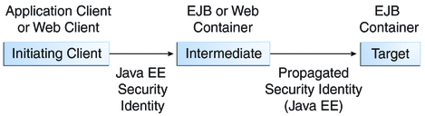

Securing Enterprise Beans
Enterprise beans are Java EE components that implement Enterprise JavaBeans (EJB) technology. Enterprise beans run in the EJB container, a runtime environment within the GlassFish Server. Although transparent to the application developer, the EJB container provides system-level services such as transactions and security to its enterprise beans, which form the core of transactional Java EE applications.
Enterprise bean methods can be secured using one of the following methods:
Declarative Security (preferred)
Declarative security expresses an application component’s security requirements using either deployment descriptors or annotations.
The presence of an annotation in the business method of an enterprise bean class that specifies method permissions is all that is needed for method protection and authentication in some situations. This section discusses this simple and efficient method of securing enterprise beans.
There are some limitations to the simplified method of securing enterprise beans, so there are some instances where you would want to continue to use the deployment descriptor to specify security information. An authentication mechanism must be configured on the server for the simple solution to work. The GlassFish Server provides a default authentication method of basic authentication. Using deployment descriptors to specify security information for enterprise applications is discussed in Part VII, Security, in The Java EE 6 Tutorial, Volume II.
This tutorial describes how to invoke username-password authentication of authorized users by decorating the enterprise application's business methods with annotations that specify method permissions.
To make the deployer's task easier, the application developer can define security roles. A security role is a grouping of permissions that a given type of users of the application must have in order to successfully use the application. For example, in a payroll application, there will be users who want to view their own payroll information (employee), user who need to view others' payroll information (manager), and users who need to be able to change others' payroll information (payrollDept). The application developer would determine who the potential users of the application would be, and which methods would be accessible to which users. The application developer would then decorate classes or methods of the enterprise bean with annotations that specify the types of users authorized to access those methods. Using annotations to specify authorized users is described in Specifying Authorized Users by Declaring Security Roles.
When one of the annotations is used to define method permissions, the deployment system will automatically require username-password authentication. In this type of authentication, a user is prompted to enter a username and password. These will be compared against a database of known users. If the user is found and the password matches, the roles that the user is assigned will be compared against the roles that are authorized to access the method. If the user is authenticated and found to have a role that is authorized to access that method, the data will be returned to the user.
Using declarative security is discussed in Securing an Enterprise Bean Using Declarative Security and Annotations.
-
For an enterprise bean, programmatic security is code that is embedded in a business method, is used to access a caller's identity programmatically, and uses this information to make security decisions. Programmatic security is useful when declarative security alone is not sufficient to express the security model of an application.
In general, security management should be enforced by the container in a manner that is transparent to the enterprise beans' business methods. The programmatic security APIs described in this chapter should be used only in the less frequent situations in which the enterprise bean business methods need to access the security context information, such as when you want to grant access based on the time of day (or other nontrivial condition checks) for a particular role.
Programmatic security is discussed in Securing an Enterprise Bean Programmatically.
Some of the material in this chapter assumes that you have already read Chapter 24, Introduction to Security in the Java EE Platform, Chapter 14, Enterprise Beans, and Chapter 15, Getting Started with Enterprise Beans.
As mentioned earlier, enterprise beans run in the EJB container, a runtime environment within the GlassFish Server, as shown in Figure 26-1.
Figure 26-1 Java EE Server and Containers

This section discusses how to secure a Java EE application where one or more modules (such as EJB JAR files) are packaged into an EAR file, the archive file that holds the application. Security annotations will be used in the Java programming class files to specify authorized users and basic, or username-password, authentication.
Enterprise beans often provide the business logic of a web application. In these cases, packaging the enterprise bean within the web application's WAR module simplifies deployment and application organization. Enterprise beans may be packaged within a WAR module as Java programming language class files or within a JAR file that is bundled within the WAR module. When a servlet, JSP page, or JavaServer Faces page handles the web front-end, and the application is packaged into a WAR module as a Java programming class file, then security for the application can be handled in the application's web.xml file. The EJB in the WAR file can have its own deployment descriptor, ejb-jar.xml, if required. Securing web applications using web.xml is discussed in Chapter 25, Getting Started Securing Web Applications and Part VII, Security, in The Java EE 6 Tutorial, Volume II.
The following sections describe declarative and programmatic security mechanisms that can be used to protect enterprise bean resources. The protected resources include methods of enterprise beans that are called from application clients, web components, or other enterprise beans.
You should also read JSR 318: Enterprise JavaBeans 3.1 for more information on this topic. This document can be downloaded from http://jcp.org/en/jsr/detail?id=318. Chapter 17 of this specification, Security Management, discusses security management for enterprise beans.
Securing an Enterprise Bean Using Declarative Security and Annotations
Declarative security enables the application developer to specify which users are authorized to access which methods of the enterprise beans, and to authenticate these users with basic, or username-password, authentication.
Frequently, the person who is developing an enterprise application is not the same person who is responsible for deploying the application. When an application developer uses declarative security to define method permissions and authentications mechanisms, they are passing along to the deployer a security view of the enterprise beans contained in the EJB JAR. When a security view is passed on to the deployer, the deployer uses this information to define method permissions for security roles. If you don’t define a security view, the deployer will have to determine what each business method does to determine which users are authorized to call each method.
A security view consists of a set of security roles, a semantic grouping of permissions that a given type of users of an application must have to successfully access the application. Security roles are meant to be logical roles, representing a type of user. You can define method permissions for each security role. A method permission is a permission to invoke a specified group of methods of the enterprise beans’ business interface, home interface, component interface, and/or web service endpoints. After method permissions are defined, username-password authentication will be used to verify the identity of the user.
It is important to keep in mind that security roles are used to define the logical security view of an application. They should not be confused with the user groups, users, principals, and other concepts that exist in the GlassFish Server. An additional step is required to map the roles defined in the application to users, groups, and principals that are the components of the user database in the file realm of the GlassFish Server. These steps are outlined in To Map Security Roles to GlassFish Server Groups.
The following sections show how an application developer uses declarative security to either secure an application or to create a security view to pass along to the deployer.
Specifying Authorized Users by Declaring Security Roles
This section discusses how to use annotations to specify the method permissions for the methods of a bean class. If you'd like more information on these annotations, refer to JSR 250: Common Annotations for the Java Platform.
Method permissions can be specified on the class, the business methods of the class, or both. Method permissions can be specified on a method of the bean class to override the method permissions value specified on the entire bean class. The following annotations are used to specify method permissions:
-
This annotation is used to specify all of the roles that will be used by the application, including roles not specifically named in a @RolesAllowed annotation. The set of security roles used by the application is the total of the security roles defined in the @DeclareRoles and @RolesAllowed annotations.
The @DeclareRoles annotation is specified on a bean class, where it serves to declare roles that can be tested (for example, by calling isCallerInRole) from within the methods of the annotated class. When declaring the name of a role used as a parameter to the isCallerInRole(String roleName) method, the declared name must be the same as the parameter value.
The following example code demonstrates the use of the @DeclareRoles annotation.
@DeclareRoles("BusinessAdmin") public class Calculator { ... }The syntax for declaring more than one role is as shown in the following example:
@DeclareRoles({"Administrator", "Manager", "Employee"}) @RolesAllowed("list-of-roles")
The @RolesAllowed annotation specifies the security roles permitted to access methods in an application. This annotation can be specified on a class or on one or more methods. When specified at the class level, it applies to all methods in the class. When specified on a method, it applies to that method only, and overrides any values specified at the class level.
To specify that no roles are authorized to access methods in an application, use the @DenyAll annotation. To specify that a user in any role is authorized to access the application, use the @PermitAll annotation.
When used in conjunction with the @DeclareRoles annotation, the combined set of security roles is used by the application.
The following example code demonstrates the use of the @RolesAllowed annotation.
@DeclareRoles({"Administrator", "Manager", "Employee"}) public class Calculator { @RolesAllowed("Administrator") public void setNewRate(int rate) { ... } }-
The @PermitAll annotation specifies that all security roles are permitted to execute the specified method or methods. The user is not checked against a database to ensure that this user is authorized to access this application.
This annotation can be specified on a class or on one or more methods. Specifying this annotation on the class means that it applies to all methods of the class. Specifying it at the method level means that it applies to only that method.
The following example code demonstrates the use of the @PermitAll annotation.
import javax.annotation.security.*; @RolesAllowed("RestrictedUsers") public class Calculator { @RolesAllowed("Administrator") public void setNewRate(int rate) { //... } @PermitAll public long convertCurrency(long amount) { //... } } -
The @DenyAll annotation specifies that no security roles are permitted to execute the specified method or methods. This means that these methods are excluded from execution in the Java EE container.
The following example code demonstrates the use of the @DenyAll annotation.
import javax.annotation.security.*; @RolesAllowed("Users") public class Calculator { @RolesAllowed("Administrator") public void setNewRate(int rate) { //... } @DenyAll public long convertCurrency(long amount) { //... } }
Example 26-1 Declaring Roles Using the @DeclareRoles Annotation
The following code snippet demonstrates the use of the @DeclareRoles annotation with the isCallerInRole method. In this example, the @DeclareRoles annotation declares a role that the enterprise bean PayrollBean uses to make the security check using isCallerInRole("payroll") to verify that the caller is authorized to change salary data.
@DeclareRoles("payroll")
@Stateless public class PayrollBean implements Payroll {
@Resource SessionContext ctx;
public void updateEmployeeInfo(EmplInfo info) {
oldInfo = ... read from database;
// The salary field can be changed only by callers
// who have the security role "payroll"
Principal callerPrincipal = ctx.getCallerPrincipal();
if (info.salary != oldInfo.salary && !ctx.isCallerInRole("payroll")) {
throw new SecurityException(...);
}
...
}
...
}Example 26-2 Declaring Roles Using the @RolesAllowed Annotation
The following example code illustrates the use of the @RolesAllowed annotation:
@RolesAllowed("admin")
public class SomeClass {
public void aMethod () {...}
public void bMethod () {...}
...
}
@Stateless public class MyBean extends SomeClass implements A {
@RolesAllowed("HR")
public void aMethod () {...}
public void cMethod () {...}
...
}In this example, assuming aMethod, bMethod, and cMethod are methods of business interface A, the method permissions values of methods aMethod and bMethod are @RolesAllowed("HR") and @RolesAllowed("admin") respectively. The method permissions for method cMethod have not been specified.
To clarify, the annotations are not inherited by the subclass itself. Instead, the annotations apply to methods of the superclass that are inherited by the subclass.
To Map Security Roles to GlassFish Server Groups
The GlassFish Server assigns users to principals or groups, rather than to security roles. When you are developing a Java EE application, you don’t need to know what categories of users have been defined for the realm in which the application will be run. In the Java EE platform, the security architecture provides a mechanism for mapping the security roles defined in the application to the users, principals, or groups defined in the runtime realm. The deployer works with the security view provided by the application developer to implement this mapping.
One way to declare a mapping between a security role used in the application and one or more groups and/or principals defined for the applicable realm of the GlassFish Server is to use the security-role-mapping element in the runtime deployment descriptor (sun-application.xml, sun-web.xml, or sun-ejb-jar.xml.) This is the method to use when the role name defined in the application does not match the group or principal name defined for the GlassFish Server.
In the tutorial, the role names used in the application are the same as the group names defined on the GlassFish Server. Under these circumstances, you can enable a default principal-to-role mapping on the GlassFish Server using the Administration Console. To enable the default principal-to-role-mapping, follow these steps.
- Start the GlassFish Server, if it is not already running.
- Start the Administration Console.
- Expand the Configuration node.
- Select the Security node.
- On the Security page, select the Default Principal to Role Mapping Enabled check box.
- Click Save.
Specifying an Authentication Mechanism and Secure Connection
When method permissions are specified, basic username-password authentication will be invoked by the GlassFish Server.
If you would like to specify a different type of authentication, or to require a secure connection using SSL, you would specify this information in an application deployment descriptor. Using application deployment descriptors is discussed in Part VII, Security, in The Java EE 6 Tutorial, Volume II.
Example: Securing an Enterprise Bean
This section discusses how to configure an enterprise bean for basic username-password authentication. When a bean that is constrained in this way is requested, the server requests a user name and password from the client and verifies that the user name and password are valid by comparing them against a database of authorized users on the GlassFish Server.
If the topic of authentication is new to you, please refer to the section titled Specifying an Authentication Mechanism.
This example demonstrates security by starting with the unsecured enterprise bean application, cart, which is found in the directory tut-install/examples/ejb/cart/ and is discussed in The cart Example.
In general, the following steps are necessary to add username-password authentication to an existing application that contains an enterprise bean. In the example application included with this tutorial, these steps have been completed for you and are listed here simply to show what needs to be done should you wish to create a similar application.
Create an application like the one in The cart Example. The example in this tutorial starts with this example and demonstrates adding basic authentication of the client to this application. The example application discussed in this section can be found at tut-install/examples/security/cart-secure/.
If you have not already done so, complete the steps in To Set Up Your System for Running the Security Examples to configure your system for running the tutorial applications.
Modify the source code for the enterprise bean, CartBean.java, to specify which roles are authorized to access which protected methods. This step is discussed in Annotating the Bean.
Build, package, and deploy the enterprise bean, then build and run the client application by following the steps in To Build, Deploy, and Run the Secure Cart Example Using NetBeans IDE or To Build, Deploy, and Run the Secure Cart Example Using Ant.
Annotating the Bean
The source code for the original cart application was modified as shown in the following code snippet (modifications in bold). The resulting file can be found in the following location:
tut-install/examples/security/cart-secure/cart-secure-ejb/src/java/cart/ ejb/CartBean.java
The code snippet is as follows:
package cart.ejb;
import cart.util.BookException;
import cart.util.IdVerifier;
import java.util.ArrayList;
import java.util.List;
import javax.ejb.Remove;
import javax.ejb.Stateful;
import javax.annotation.security.DeclareRoles;
import javax.annotation.security.RolesAllowed;
@Stateful
@DeclareRoles("TutorialUser")
public class CartBean implements Cart {
List<String> contents;
String customerId;
String customerName;
public void initialize(String person) throws BookException {
if (person == null) {
throw new BookException("Null person not allowed.");
} else {
customerName = person;
}
customerId = "0";
contents = new ArrayList<String>();
}
public void initialize(
String person,
String id) throws BookException {
if (person == null) {
throw new BookException("Null person not allowed.");
} else {
customerName = person;
}
IdVerifier idChecker = new IdVerifier();
if (idChecker.validate(id)) {
customerId = id;
} else {
throw new BookException("Invalid id: " + id);
}
contents = new ArrayList<String>();
}
@RolesAllowed("TutorialUser")
public void addBook(String title) {
contents.add(title);
}
@RolesAllowed("TutorialUser")
public void removeBook(String title) throws BookException {
boolean result = contents.remove(title);
if (result == false) {
throw new BookException("\"" + title + "\" not in cart.");
}
}
@RolesAllowed("TutorialUser")
public List<String> getContents() {
return contents;
}
@Remove()
@RolesAllowed("TutorialUser")
public void remove() {
contents = null;
}
}The @RolesAllowed annotation is specified on methods for which you want to restrict access. In this example, only users in the role of TutorialUser will be allowed to add and remove books from the cart, and to list the contents of the cart. A @RolesAllowed annotation implicitly declares a role that will be referenced in the application; therefore, no @DeclareRoles annotation is required. The presence of the @RolesAllowed annotation also implicitly declares that authentication will be required for a user to access these methods. If no authentication method is specified in the deployment descriptor, the type of authentication will be username-password authentication.
To Build, Deploy, and Run the Secure Cart Example Using NetBeans IDE
To build, deploy, and run the cart-secure project in your GlassFish Server instance using NetBeans IDE, follow these steps.
- Follow the steps in To Set Up Your System for Running the Security Examples.
- In NetBeans IDE, select File→Open Project.
- In the Open Project dialog, navigate to tut-install/examples/security/.
- Select the cart-secure folder.
- Select the Open as Main Project and Open Required Projects check boxes.
- Click Open Project.
- In the Projects tab, right-click the cart-secure project and select Build.
- In the Projects tab, right-click the cart-secure project and select Deploy.
This step builds and packages the application into cart-secure.ear, located in the directory tut-install/examples/security/cart-secure/dist/, and deploys this EAR file to your GlassFish Server instance.
- To run the application client, right-click the cart-secure project and select Run.
A Login for user: dialog box appears.
- In the dialog box, type the user name and password of a
file realm user created on the GlassFish Server and assigned to the group
TutorialUser; then click OK.
If the user name and password you enter are authenticated, the output of the application client appears in the Output pane:
... Retrieving book title from cart: Infinite Jest Retrieving book title from cart: Bel Canto Retrieving book title from cart: Kafka on the Shore Removing "Gravity’s Rainbow" from cart. Caught a BookException: "Gravity’s Rainbow" not in cart. Java Result: 1 ...
If the user name and password are not authenticated, the dialog box reappears until you type correct values.
To Build, Deploy, and Run the Secure Cart Example Using Ant
To build, deploy, and run the secure EJB example using the Ant tool, follow these steps.
- Follow the steps in To Set Up Your System for Running the Security Examples.
- From a terminal window or command prompt, go to the tut-install/examples/security/cart-secure/ directory.
- To build the application and package it into an EAR file, type the
following command at the terminal window or command prompt:
ant
- To deploy the application to the GlassFish Server, type the following command:
ant deploy
- To run the application client, type the following command:
ant run
This task retrieves the application client JAR and runs the application client.
A Login for user: dialog box appears.
- In the dialog box, type the user name and password of a
file realm user created on the GlassFish Server and assigned to the group
TutorialUser, then click OK.
If the user name and password are authenticated, the client displays the following output:
[echo] running application client container. [exec] Retrieving book title from cart: Infinite Jest [exec] Retrieving book title from cart: Bel Canto [exec] Retrieving book title from cart: Kafka on the Shore [exec] Removing "Gravity’s Rainbow" from cart. [exec] Caught a BookException: "Gravity’s Rainbow" not in cart. [exec] Result: 1
If the username and password are not authenticated, the dialog box reappears until you type correct values.
Securing an Enterprise Bean Programmatically
Programmatic security is code that is embedded in a business method, is used to access a caller's identity programmatically, and uses this information to make security decisions within the method itself.
Accessing an Enterprise Bean Caller’s Security Context
In general, security management should be enforced by the container in a manner that is transparent to the enterprise beans’ business methods. The security API described in this section should be used only in the less frequent situations in which the enterprise bean business methods need to access the security context information, such as when you want to restrict access to a particular time of day.
The javax.ejb.EJBContext interface provides two methods that allow the bean provider to access security information about the enterprise bean’s caller:
getCallerPrincipal
The purpose of the getCallerPrincipal method is to allow the enterprise bean methods to obtain the current caller principal’s name. The methods might, for example, use the name as a key to information in a database.
The following code sample illustrates the use of the getCallerPrincipal method:
@Stateless public class EmployeeServiceBean implements EmployeeService { @Resource SessionContext ctx; @PersistenceContext EntityManager em; public void changePhoneNumber(...) { ... // obtain the caller principal. callerPrincipal = ctx.getCallerPrincipal(); // obtain the caller principal’s name. callerKey = callerPrincipal.getName(); // use callerKey as primary key to find EmployeeRecord EmployeeRecord myEmployeeRecord = em.find(EmployeeRecord.class, callerKey); // update phone number myEmployeeRecord.setPhoneNumber(...); ... } }In this example, the enterprise bean obtains the principal name of the current caller and uses it as the primary key to locate an EmployeeRecord entity. This example assumes that application has been deployed such that the current caller principal contains the primary key used for the identification of employees (for example, employee number).
isCallerInRole
The enterprise bean code can use the isCallerInRole method to allow the bean provider/application developer to code the security checks that cannot be easily defined using method permissions. Such a check might impose a role-based limit on a request, or it might depend on information stored in the database.
The enterprise bean code can use the isCallerInRole method to test whether the current caller has been assigned to a given security role. Security roles are defined by the bean provider or the application assembler, and are assigned to principals or principal groups that exist in the operational environment by the deployer.
The following code sample illustrates the use of the isCallerInRole method:
@Stateless public class PayrollBean implements Payroll { @Resource SessionContext ctx; public void updateEmployeeInfo(EmplInfo info) { oldInfo = ... read from database; // The salary field can be changed only by callers // who have the security role "payroll" if (info.salary != oldInfo.salary && !ctx.isCallerInRole("payroll")) { throw new SecurityException(...); } ... } ... }
You would use programmatic security in this way to dynamically control access to a method, for example, when you want to deny access except during a particular time of day. An example application that uses the getCallerPrincipal and isCallerInRole methods is described in Example: Using the isCallerInRole and getCallerPrincipal Methods.
Example: Using the isCallerInRole and getCallerPrincipal Methods
This example demonstrates how to use the getCallerPrincipal and isCallerInRole methods with an enterprise bean. This example starts with a very simple EJB application, converter, and modifies the methods of the ConverterBean so that currency conversion will only occur when the requester is in the role of TutorialUser.
The completed version of this example can be found at tut-install/examples/security/converter-secure. This example is based on the unsecured enterprise bean application, converter, which is discussed in Chapter 15, Getting Started with Enterprise Beans and is found in the directory tut-install/examples/ejb/converter/. This section builds on this example by adding the necessary elements to secure the application using the getCallerPrincipal and isCallerInRole methods, which are discussed in more detail in Accessing an Enterprise Bean Caller's Security Context.
In general, the following steps are necessary when using the getCallerPrincipal and isCallerInRole methods with an enterprise bean. In the example application included with this tutorial, many of these steps have been completed for you and are listed here simply to show what needs to be done should you wish to create a similar application.
Create a simple enterprise bean application, such as the converter example. See Chapter 15, Getting Started with Enterprise Beans for more information on creating and understanding this example. This section of the tutorial starts with this unsecured application and demonstrates how to access an enterprise bean caller’s security context.
If you have not already done so, set up a user on the GlassFish Server in the file realm, in the group TutorialUser, and set up default principal to role mapping. To do this, follow the steps in To Set Up Your System for Running the Security Examples.
Modify ConverterBean to add the getCallerPrincipal and isCallerInRole methods. For this example, callers that are in the role of TutorialUser will be able to calculate the currency conversion. Callers not in the role of TutorialUser will see a value of zero for the conversion amount. Modifying the ConverterBean code is discussed in Modifying ConverterBean.
Modify ConverterServlet to specify security for the servlet, as described in Specifying Security for Basic Authentication Using Annotations. the only change is to specify the following annotations:
@WebServlet(name = "ConverterServlet", urlPatterns = {"/"}) @ServletSecurity( @HttpConstraint(transportGuarantee = TransportGuarantee.CONFIDENTIAL, rolesAllowed = {"TutorialUser"}))Build, package, deploy, and run the application.
If necessary, refer to the tips in Troubleshooting the Secure Converter Application for tips on errors you might encounter and some possible solutions.
Modifying ConverterBean
The source code for the original converter application was modified as shown in the following code snippet (modifications in bold) to add the if..else clause that tests if the caller is in the role of TutorialUser. If the user is in the correct role, the currency conversion is computed and displayed. If the user is not in the correct role, the computation is not performed, and the application displays the result as 0. The code example can be found in the following file:
tut-install/examples/ejb/converter-secure/converter-secure-ejb/src/java/ converter/ejb/ConverterBean.java
The code snippet is as follows:
package converter.ejb;
import java.math.BigDecimal;
import javax.ejb.Stateless;
import java.security.Principal;
import javax.annotation.Resource;
import javax.ejb.SessionContext;
import javax.annotation.security.DeclareRoles;
import javax.annotation.security.RolesAllowed;
@Stateless()
@DeclareRoles("TutorialUser")
public class ConverterBean{
@Resource SessionContext ctx;
private BigDecimal yenRate = new BigDecimal("89.5094");
private BigDecimal euroRate = new BigDecimal("0.0081");
@RolesAllowed("TutorialUser")
public BigDecimal dollarToYen(BigDecimal dollars) {
BigDecimal result = new BigDecimal("0.0");
Principal callerPrincipal = ctx.getCallerPrincipal();
if (ctx.isCallerInRole("TutorialUser")) {
result = dollars.multiply(yenRate);
return result.setScale(2, BigDecimal.ROUND_UP);
} else {
return result.setScale(2, BigDecimal.ROUND_UP);
}
}
@RolesAllowed("TutorialUser")
public BigDecimal yenToEuro(BigDecimal yen) {
BigDecimal result = new BigDecimal("0.0");
Principal callerPrincipal = ctx.getCallerPrincipal();
if (ctx.isCallerInRole("TutorialUser")) {
result = yen.multiply(euroRate);
return result.setScale(2, BigDecimal.ROUND_UP);
} else {
return result.setScale(2, BigDecimal.ROUND_UP);
}
}
}
To Build, Package, and Deploy the Secure Converter Example Using NetBeans IDE
After you've observed the changes to the enterprise bean and servlet, follow these steps to build, deploy, and run the secure converter example using NetBeans IDE.
- Follow the steps in To Set Up Your System for Running the Security Examples.
- In NetBeans IDE, select File→Open Project.
- In the Open Project dialog, navigate to tut-install/examples/security/.
- Select the converter-secure folder.
- Select the Open as Main Project check box.
- Click Open Project.
- Right-click the converter-secure project and select Build.
- Right-click the converter-secure project and select Deploy.
- Right-click the converter-secure project and select Run.
A web browser window opens the URL http://localhost:8080/converter-secure, and an authentication dialog appears.
- Type the username and password of a user that has been entered into
the database of users for the file realm and has been assigned
to the group of TutorialUser.
If the username and password you enter are authorized, you will see the main page of the converter application.
- Type a dollar amount in the text field and click Submit.
Output similar to the following appears.
100 dollars are 8950.94 yen. 8950.94 yen are 72.51 Euro.
To Build, Package, and Deploy the Secure Converter Example Using Ant
After you've observed the changes to the enterprise bean and servlet, follow these steps to build, deploy, and run the secure converter example using Ant.
- Follow the steps in To Set Up Your System for Running the Security Examples.
- From a terminal window or command prompt, go to the tut-install/examples/security/converter-secure/ directory.
- Type the following command:
ant all
This command both builds and deploys the example.
To Run the Secure Converter Example
- Open a web browser to the following URL:
http://localhost:8080/converter
An Authentication Required dialog box appears. Its appearance varies, depending on the browser you use.
- Type a user name and password combination that corresponds to a user who
has already been created in the file realm of the GlassFish Server and
has been assigned to the group of TutorialUser, then click OK.
The screen shown in Figure 15-1 appears.
- Type 100 in the input field and click Submit.
A second page appears, showing the converted values.
Troubleshooting the Secure Converter Application
Problem: The application displays zero values after authentication, as shown here:
appclient-command-common:
[exec] $100.00 is 0.00 Yen.
[exec] 0.00 Yen is 0.00 Euro.Solution: Verify that the user name and password that you entered for authentication match a user name and password in the GlassFish Server, and that this user is assigned to the group named TutorialUser. User names and passwords are case-sensitive. Read To Add Users to the GlassFish Server for more information on adding users to the file realm of the GlassFish Server.
Propagating a Security Identity (Run-As)
You can specify whether a caller’s security identity should be used for the execution of specified methods of an enterprise bean, or whether a specific run-as identity should be used.
Figure 26-2 illustrates this concept.
Figure 26-2 Security Identity Propagation
In this illustration, an application client is making a call to an enterprise bean method in one EJB container. This enterprise bean method, in turn, makes a call to an enterprise bean method in another container. The security identity during the first call is the identity of the caller. The security identity during the second call can be any of the following options:
By default, the identity of the caller of the intermediate component is propagated to the target enterprise bean. This technique is used when the target container trusts the intermediate container.
A specific identity is propagated to the target enterprise bean. This technique is used when the target container expects access using a specific identity.
To propagate an identity to the target enterprise bean, configure a run-as identity for the bean, as described in Configuring a Component's Propagated Security Identity.
Establishing a run-as identity for an enterprise bean does not affect the identities of its callers, which are the identities tested for permission to access the methods of the enterprise bean. The run-as identity establishes the identity that the enterprise bean will use when it makes calls.
The run-as identity applies to the enterprise bean as a whole, including all the methods of the enterprise bean’s business interface, local and remote interfaces, component interface, and web service endpoint interfaces, the message listener methods of a message-driven bean, the timeout method of an enterprise bean, and all internal methods of the bean that might be called in turn.
Configuring a Component’s Propagated Security Identity
You can configure an enterprise bean’s run-as, or propagated, security identity using the @RunAs annotation. The @RunAs annotation defines the role of the application during execution in a Java EE container. It can be specified on a class, allowing developers to execute an application under a particular role. The role must map to the user/group information in the container's security realm. The @RunAs annotation specifies the name of a security role as its parameter.
Here is some example code that demonstrates the use of the @RunAs annotation.
@RunAs("Admin")
public class Calculator {
//....
}You will have to map the run-as role name to a given principal defined on the GlassFish Server if the given roles associate to more than one user principal. Mapping roles to principals is described in Part VII, Security, in The Java EE 6 Tutorial, Volume II.
Trust Between Containers
When an enterprise bean is designed so that either the original caller identity or a designated identity is used to call a target bean, the target bean will receive the propagated identity only; it will not receive any authentication data.
There is no way for the target container to authenticate the propagated security identity. However, because the security identity is used in authorization checks (for example, method permissions or with the isCallerInRole() method), it is vitally important that the security identity be authentic. Because there is no authentication data available to authenticate the propagated identity, the target must trust that the calling container has propagated an authenticated security identity.
By default, the GlassFish Server is configured to trust identities that are propagated from different containers. Therefore, there are no special steps that you need to take to set up a trust relationship.
Deploying Secure Enterprise Beans
The deployer is responsible for ensuring that an assembled application is secure after it has been deployed in the target operational environment. If a security view has been provided to the deployer through the use of security annotations and/or a deployment descriptor, the security view is mapped to the mechanisms and policies used by the security domain in the target operational environment, which in this case is the GlassFish Server. If no security view is provided, the deployer must set up the appropriate security policy for the enterprise bean application.
Deployment information is specific to a web or application server. See the Oracle GlassFish Server 3.0.1 Application Deployment Guide for more information on deploying enterprise beans.
To Accept Unauthenticated Users
Web applications may accept unauthenticated web clients and allow these clients to make calls to the EJB container. The EJB specification requires a security credential for accessing EJB methods. Typically, the credential will be that of a generic unauthenticated user. The way you specify this credential is implementation-specific.
In the GlassFish Server, you must specify the name and password that an unauthenticated user will use to log in by modifying the GlassFish Server using the Administration Console.
- Start the GlassFish Server if it is not already running.
- Start the Administration Console.
- Expand the Configuration node.
- Select the Security node.
- On the Security page, type values in the Default Principal and Default Principal Password fields.
- Click Save.